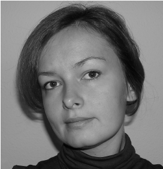
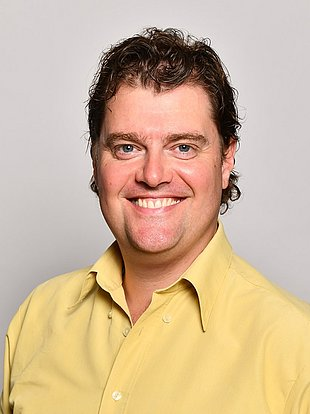

Dr. Danuta Paraficz
Senior Researcher
Laboratory for Web Science (LWS), FFHS.
This page combines the existing ADA profile pages with the broader LWS research team listed on FFHS. Internal profile pages are linked where available.

Senior Researcher
Laboratory for Web Science (LWS), FFHS.

Associate Researcher
Laboratory for Web Science (LWS), FFHS.

Forschungsfeldleiter GeoHealth Analytics
Laboratory for Web Science (LWS), FFHS.

Institutsleiterin LWS
Fachbereichsleiterin Data Science.

Associate Researcher
Laboratory for Web Science (LWS), FFHS.

Forschungsfeldleiter Energie, Umwelt, Materialien
Laboratory for Web Science (LWS), FFHS.

Expert Researcher
Laboratory for Web Science (LWS), FFHS.